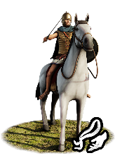
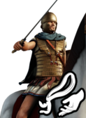
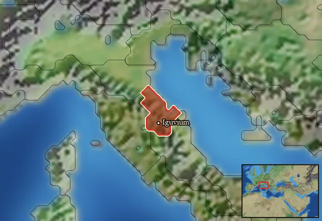

Umbrian Heavy Cavalry


Class: heavy · Category: cavalry · Men per unit: 30
Description
While the simple farmer toils from the early morning under the burning sun and the shepherd herds his cattle to new pastures, the Umbrian nobleman spends his time preparing for the day when war returns to his lands and he will heed the call to battle. Then, he will proudly join his people to fight as heroes under the protection of their god Vesuna. As the strongest mounted arm of the Umbrians, this Heavy Cavalry represents the aristocratic elite of the Umbrian city-states and their retainers. Recruited from the wealthiest families and patrician clans of major centres such as Tuder, Camerinum, Iguvium, and Mevania, these noblemen own the finest warhorses and armour available in Central Italy. They enter the battlefield fully equipped, armed with thrusting spears as well as straight xiphoi or curved machairai swords for prolonged hand-to-hand combat. For protection, they carry large thureos shields painted with starburst, anchors, geometric, or floral blazons. They wear lamellar cuirasses or composite linen corselets (linothorakes) with leather pteryges, paired with bronze helmets of the Attic, Chalcidian, or Etrusco-Thracian designs, some adorned with plumes. While not the strongest cavalrymen in Italy, their heavy armour, great morale, and strong charge still allows these men to break enemy formations, shatter exposed infantry flanks, and present a challenge to anyone foolish enough to attack them without proper support.
Historical background
The emergence of an equestrian aristocracy in ancient Umbria is attested from the Orientalizing period, the 7th to the 6th centuries BC, onwards (Manconi, 'The Umbri', in: Farney and Bradley (eds.), The Peoples of Ancient Italy (2017), pp. 605–607). Princely tombs excavated at Pitino, Colfiorito, Fabriano, and Gubbio have yielded discoveries of many weapons and even two-wheeled war chariots, demonstrating the existence of an aristocracy as a warrior class in Umbria (Manconi (2017), p. 606). Their equipment closely mirrored that of neighbouring Etruria and Picenum, with elements of Hellenic (probably introduced into Italy through the Greek cities of Magna Graecia) and Etruscan origin being combined with native Italic elements (Torelli, s.v. 'Archaic Rome between Latium and Etruria', in: The Cambridge Ancient History VII.2 (2006), pp. 35–37; Burns, The Cultural and Military Significance (2005), pp. 82–94). During the late 4th and 3rd centuries BC, South and Central Italic cavalry transitioned from using the heavy aspis to the round and oval thureos shield. Indeed, it is generally believed that the Greeks adopted the practice of fighting on horseback with shields from Italy (Burns (2005), pp. 171–172; Van der Wielen-van Ommeren, 'Terres cuites dauniennes', in: Genava 53 (2005), pp. 68–71).
The diplomatic and military relationship between the Umbrian nobility and Rome was established early through formal bilateral alliances (Bradley and Hall, 'The Roman Conquest of Italy', in: Farney and Bradley (eds.) (2017), pp. 202–203). In 310 BC, the consul Q. Fabius Maximus Rullianus concluded a treaty of alliance (foedus) on equal terms with the city of Camerinum, which remained one of Rome's most faithful allies through the subsequent centuries (Liv. 9.36.6, 28.45; Manconi (2017), p. 629). At the Battle of Asculum (279 BC), allied Umbrian contingents served alongside Roman legions to contain King Pyrrhos' cavalry and war elephants. As Dionysios of Halikarnassos tells us, they were distributed among the army to avoid weakening the lines: “The Latins, Campanians, Sabines, Umbrians, Volscians, Marrucini, Peligni, Ferentani, and their other subjects they divided into four divisions and mingled them with the Roman legions, in order that no part of their lines might be weak” (Dion. Hal. Ant. Rom. 20.1.5; Franke, 'Pyrrhus', in: The Cambridge Ancient History VII.2 (2006), pp. 472–473).
During the Second Punic War, Umbrian cavalry served in Roman armies as allies across Italy and Spain. When Scipio Africanus prepared his fleet for North Africa in 205 BC, Umbrian towns provided volunteer detachments to support this expedition (Liv. 28.45; Manconi (2017), p. 629). Thus, under continuous military service as allies in Roman armies, these nobles adopted Roman military practices and norms.
The last gasp of Umbrian independence seems to have occurred during the Social War (91–88 BC) in which they seem to have revolted, either because they heard about the early success of the Italian coalition, or possibly due to frustration at Rome’s unwillingness to reward those who had stayed loyal (Santangelo, 'The Social War', in: Farney and Bradley (eds.) (2017), pp. 241–243). Livy narrates that the “Deputy Aulus Plotius defeated the Umbrians and praetor Lucius Porcius the Etruscans. Both nations had revolted” (Liv. Periochae, 74.5; Orosius, Histories, Book 5, Chapter 18, 17). Commenting at a much later time, Lucius Annaeus Florus (circa 74 – 130 AD), a Roman historian follows up on Livy, writing as part of his “Epitome of Roman History” on the Social War that: “The flower of our bravest and most trusted allies were led, each under their several standards, by the most eminent leaders from the country towns, Poppaedius commanding the Marsians and Paeligni, Afranius the Latins, Plotius the Umbrians, Egnatius the Etruscans, and Telesinus the Samnites and Lucanians” (Florus, Book II, VI; Livy, Periochae, 74.5).
However, Appian states that the Umbrians only considered rebelling instead, and were eventually kept loyal by the grant of citizenship: “While these events were transpiring on the Adriatic side of Italy, the inhabitants of Etruria and Umbria and other neighbouring peoples on the other side of Rome heard of them and all were excited to revolt. The Senate, fearing lest they should be surrounded by war, and unable to protect themselves, garrisoned the sea-coast from Cumae to the city with freedmen, who were then for the first time enrolled in the army on account of the scarcity of soldiers. The Senate also voted that those Italians who had adhered to their alliance should be admitted to citizenship, which was the one thing they all desired most. They sent this decree around among the Etruscans, who gladly accepted the citizenship. By this favour the Senate made the faithful more faithful, confirmed the wavering, and mollified their enemies by the hope of similar treatment” (Appian, Roman History. The Civil Wars, 1.49).
It might indeed be the case that the Etruscan/Umbrian revolt involved only a handful of communities, with the rest staying loyal or simply neutral, and was fully neutralized after victory in battle against the few rebellious communities as well as the grant of citizenship. Others like Dart believe that the communities in Etruria and Umbria initially withheld their support for the insurgents, only to be the first to be granted citizenship, albeit begrudgingly, by the Republic as an emergency measure, through the lex Iulia in 90 BC. Dart suggests that the incorporation of most of Italy into the citizen body was a reluctant measure taken by the Romans to alleviate the threat of further unrest, even if he notes that such a concession eventually proved highly effective at safeguarding the loyalty of these communities (Dart, The Social War (2016), p. 44-45).
Regardless of what actually transpired, the Umbrians received full Roman citizenship with the passing of the Lex Iulia in 90 BC and the Lex Plautia Papiria in 89 BC, which expanded Roman citizenship to Italian allied communities and individuals who had not joined the Social War against Rome. They were then progressively integrated into Roman society. Prominent Umbrian families came to play an active role in the governance and military leadership of the late Republic and early Empire. The famous Roman general, Caesar, assumed control of the region in 49 BC, taking conscripts from its various towns, and after his death, the Umbrian towns also took part in the repeated Civil Wars. In that same century, the process of unification of Umbria under Roman citizenship was concluded with the setting up of administratively independent municipal systems (Cic. Arch. 7; Santangelo, 'The Social War', in: Farney and Bradley (eds.) (2017), pp. 241–243; Manconi (2017), p. 630).
Stats
| Rank in roster | ||
|---|---|---|
| Men per unit | 30 | █········· 8% |
| Attack | 11 | ███······· 34% |
| Charge bonus | 26 | ████████·· 81% |
| Defence | 33 | █████····· 52% |
| · armour | 11 | ██████···· 64% |
| · defence skill | 18 | ████······ 39% |
| · shield | 4 | █████····· 48% |
| Morale | 12 | ██████···· 57% |
| Discipline | Normal | |
| Training | Trained | |
| Recruitment cost | 2,400 dn | ███████··· 65% |
| Upkeep per turn | 970 dn | █████████· 87% |
| Turns to recruit | 3 |
Weapons
Its secondary attack is the stronger one: 13 against 11.
| Primary | Secondary | Primary | Secondary | Primary | Secondary | Primary | Secondary | ||||
|---|---|---|---|---|---|---|---|---|---|---|---|
| Attack | 11 | 13 | Charge bonus | 26 | 20 | Type | melee · blade | melee · blade | Damage | piercing | slashing |
Defence
| Primary | Secondary | Primary | Secondary | Primary | Secondary | Primary | Secondary | ||||
|---|---|---|---|---|---|---|---|---|---|---|---|
| Total | 33 | — | Armour | 11 | — | Defence skill | 18 | — | Shield | 4 | — |
Condition and terrain
| Hit points | 1 | Ground: scrub / sand / forest / snow | -1 / -1 / -8 / -1 | Charge distance | 40 | Formations | Square · Wedge |
| Mount | medium horse |
Technical stats
| Time between blows (primary / secondary) | 2.5 s / 2.5 s | Extra fatigue in hot climates | 1 | Spacing between men: close / loose | 2 × 4.8 m / 3 × 7.2 m | Default ranks | 5 |
In battle: Good stamina
Who can recruit it
A core roster unit for one faction, which can raise it anywhere it holds the right building:
Any faction holding one of the provinces below can field it.
Exactly what a settlement must have, route by route (3)
| For | Building | Also requires | For | Building | Also requires | For | Building | Also requires | |||
|---|---|---|---|---|---|---|---|---|---|---|---|
| Sarsinates | Direct Rule | Tier 3 Military Industrial Complex · Tier 2 Colony · Requires resource horses or horses supplied factionwide | Sarsinates | Homeland | Tier 2 Military Industrial Complex | Every faction except Sarsinates (area-of-recruitment unit) | Any settlement | Tier 2 Military Industrial Complex · Umbrian area of recruitment · Requires resource horses or horses supplied factionwide · Dependency only · Tier 1 Colony not built |
Areas of recruitment

| Zone | Provinces | ||||||
|---|---|---|---|---|---|---|---|
| Umbrian | 1 |